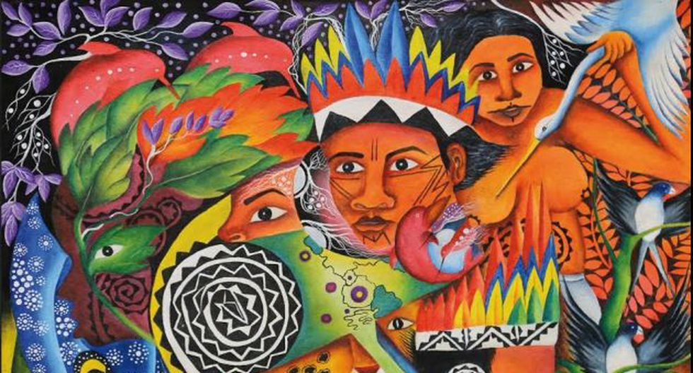
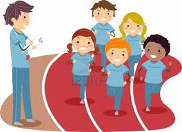
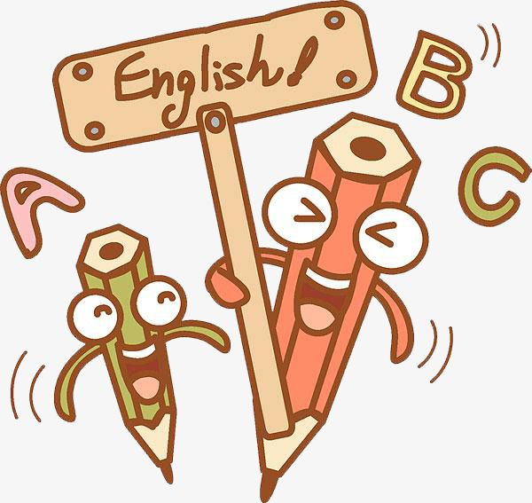

| ARTE Y CULTURA |
|  |
|
Las artes son parte integral de la vida cotidiana y están presentes en todas las culturas y sociedades. Abracan desde las formas más tradicionales
incorporadas a la vida de una comunidad. A través de las artes, las personas hemos podido expresarnos, desarrollar nuestra creatividad, comprender
nuestra realidad y desenvolvernos en ella, imaginando nuevas posibilidades.
|
CIENCIA Y TECNOLOGÍA |
|
|
La Ciencia y Tecnología juegan un papel preponderante en un mundo que se mueve y cambia muy rápido, donde se innova constantemente. En las circunstancias
actuales debemos preparar a nuestros estudiantes para enfrentar y dar soluciones o juzgar alternativas de solución a los problemas locales, regionales o
nacionales, tales como: la contaminación ambiental, el cambio climático, el deterioro de nuestros ecosistemas, la explotación irracional de los recursos
naturales, las enfermedades y las epidemias entre otros.
|
EDUCACIÓN FÍSICA |
|  |
|
La evolución de la educación física está determinada actualmente por los avances sociales, científicos y tecnológicos en el mundo. Las demandas sociales
respecto a la formación de hábitos relacionados con el logro del bienestar físico, psicológico y emocional han generado que el área haya tomado cada vez
más importancia en los currículos escolares. Por ello, a través de la educación Física, se pretende que los estudiantes desarrollen una conciencia crítica
sobre el cuidado de su salud y de la de los demás, buscando que sean autónomos y capaces de asumir sus propias decisiones para la mejora de la calidad de vida.
|
INGLES |
|  |
|
Son varias las motivaciones en el aprendizaje de una lengua extranjera. Nuestra área en una constante búsqueda de estrategias innovadoras
y sobre todo interactivas, está implementando la aplicación actualizada del idioma. Es de vital importancia lograr el compromiso de todos
los miembros activos de nuestra Institución: la familia; el Colegio; los docentes; y sobre todo los alumnos. En conclusión, el idioma extranjero
demanda compromiso integral y permanente de todos en nuestra Institución.
|